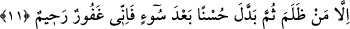
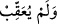

“ geriye dönmedi, demektir. Mûsâ (a.s.) bu işle kendisinin helâk edilmek
istendiğini zannettiği için korkmuştur. Nitekim âyetin devamı buna delâlet etmektedir:
Kendisine dedik ki: “Ey Mûsâ! Korkma;” yâni bana güvenerek benden başkasından
ya da mutlak olarak benden de benden başkasından da korkma! “Çünkü benim
huzurumda peygamberler korkmaz.” Bu âyet, peygamberlerden mutlak olarak korkunun
kaldırıldığına delâlet eder. Fakat bu her zaman değil, kendilerine vahiy ve hitap edildiği
vakittir. Çünkü onlar o vakit Allah’ın işlerini mütâlaada müstağraktırlar. Gönüllerine
kimseden hiçbir korku gelmez. Diğer zamanlarda ise insanların Allah’tan en fazla
korkanlarıdırlar.
Ya da âyetin mânâsı şöyledir: Onlar için benim katımda kötü âkıbet yoktur ki ondan
korksunlar.
et-Te’vîlâtü’n-Necmiyye’de der ki: “Yâni kim mâsivâdan Allah’a firar ederse, Allah
onu mâsivâdan emin kılar ve ona şöyle der: “Korkma, sen benim yanımdasın. Benim
eltâfımdan kendisine hediyeler ve bağışlar gönderilen, nurlanmış ve ilhâma mazhar
olmuş kalbler benim huzurumda benden başkasından korkmaz.”
Arâisü’l-beyân’da der ki: “Yılandan korkma. Çünkü gördüğün şey, benim azametimin
tecellîsinin zuhûrudur. Peygamberler, iltibâs makamında (Allah ile beraber iken) benim
azametimi ve celâlimi müşâhededen dolayı korkmazlar. Çünkü onlar benim
rubûbiyetimin sırlarını bilirler.”
Allah Teâlâ, Mûsâ (a.s.)’ın Kıptî’yi öldürdüğünden dolayı korku duyduğunu bildiği
için buna îmâda bulunarak şöyle buyurdu:
11. Ancak, kim haksızlık eder, sonra, işlediği kötülük yerine iyilik yaparsa, bilsin
ki ben (ona karşı da) çok bağışlayıcıyım, çok merhamet sâhibiyim.
“Ancak, kim haksızlık eder,” yâni peygamberlerden Âdem, Yûnus, Dâvud, Mûsâ
(aleyhimü’s-selâm) gibi kim kendisinden bir zelle sâdır olmasıyla nefsine zulmeder
“sonra, işlediği kötülük yerine iyilik yaparsa,” Sonra kötülüğü iyilikle değiştirir ve
onun yerine iyilik yaparsa, yâni günahtan sonra tevbe ederse…
“Haksızlık/zulüm” denilmesi, Âdem (a.s.)’ın “Ey Rabbimiz! Biz kendimize
zulmettik.” (el-A’râf, 7/23) ve Mûsâ (a.s.)’ın “Rabbim! Doğrusu kendime
zulmettim.” (el-Kasas, 28/16) demesi sebebiyledir.
“Bilsin ki ben” tevbe edenleri “çok bağışlayıcıyım, çok merhamet sâhibiyim” onlara
çok şefkatliyim.
Peygamberlerin günah işlemesinin mümkün olup olmadığı konusunda âlimler ihtilâf
ettiler. İmam (Râzî) bu konuda şöyle demiştir: “Bize göre tercih edilen görüş,
peygamberlik sırasında onlardan ne küçük ve ne de büyük günah sâdır olmadığıdır.